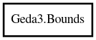

Bounds
Object Hierarchy:

Description:
public struct Bounds
Stores a rectangular region
Content:
Creation methods:
Methods:
- public bool contains (int x, int y)
Checks if a point lies inside the bounds
- public bool empty ()
Checks if the bounds is empty
- public void expand (int x, int y)
Expand the bounds
- public int get_height ()
Calculate the height of the bounds
- public int get_width ()
Calculate the width of the bounds
- public void intersection (Bounds other)
Calculate the intersection of two bounds
- public void mirror_x ()
Mirror the bounds on along the x axis
- public bool overlaps (Bounds other)
Check if this bounds an another overlaps
- public void rotate (int angle)
Rotate the bounds around the origin
- public string to_string ()
Create a string for debugging
- public void translate (int dx, int dy)
Translate the bounds
- public void union (Bounds other)
Calculate the union of two bounds
Fields:
- public int min_x
The smallest x coordinate, inclusive
- public int min_y
The smallest y coordinate, inclusive
- public int max_x
The largest x coordinate, inclusive
- public int max_y
The largest y coordinate, inclusive